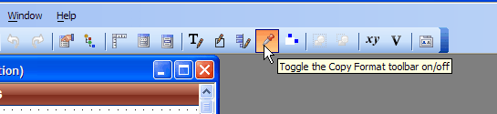
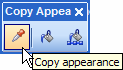
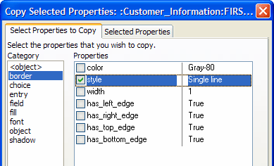

Copy and Paste an Object Appearance
You can right-click on an object and select Copy appearance.
This copies all of the properties that define that object's appearance to the clipboard. Then right-click on another object in the same layout or another layout and select Paste appearance, to copy the appearance to that object, or Paste All, to copy that object's appearance to all objects on the form of that class (e.g., all "field" objects).
You can also display a floating toolbar to make copying and pasting object appearances easier.
 
The Advanced > Copy Selected Properties... option displays the Copy Selected Properties dialog box, which lets you select specific properties to copy.

Supported By
Alpha Five Version 5 and Above